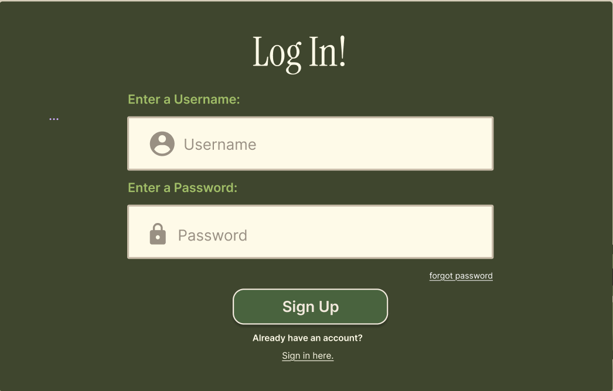
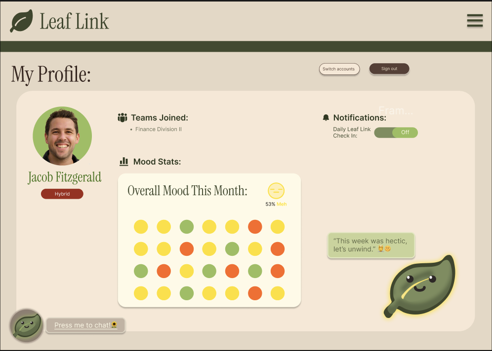
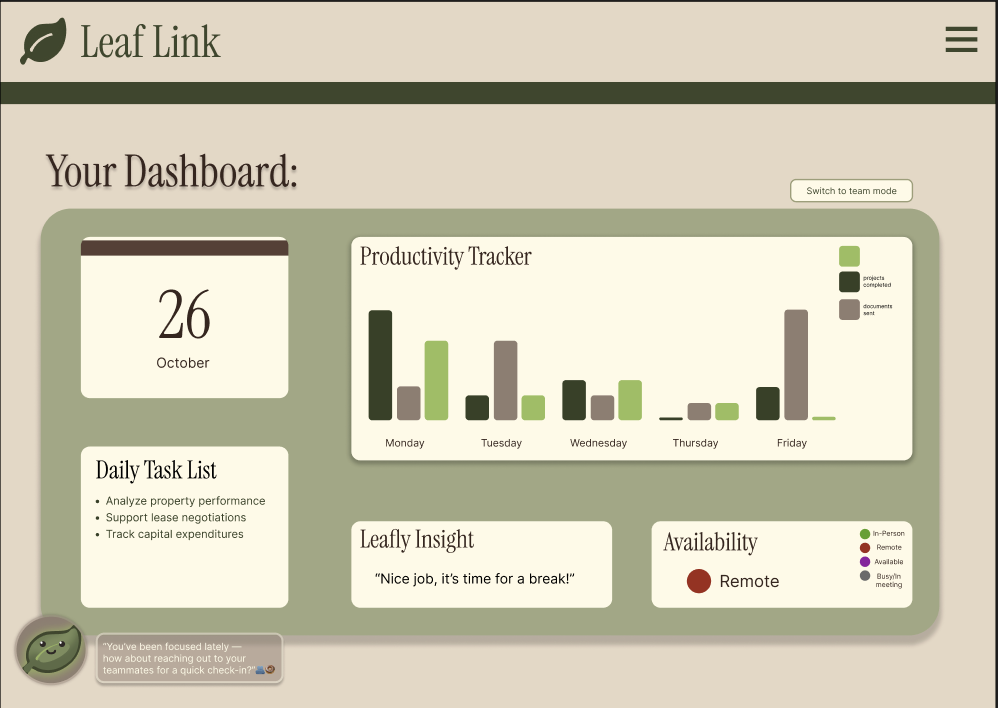
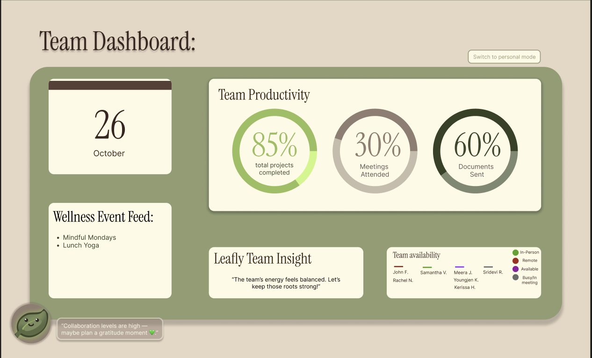
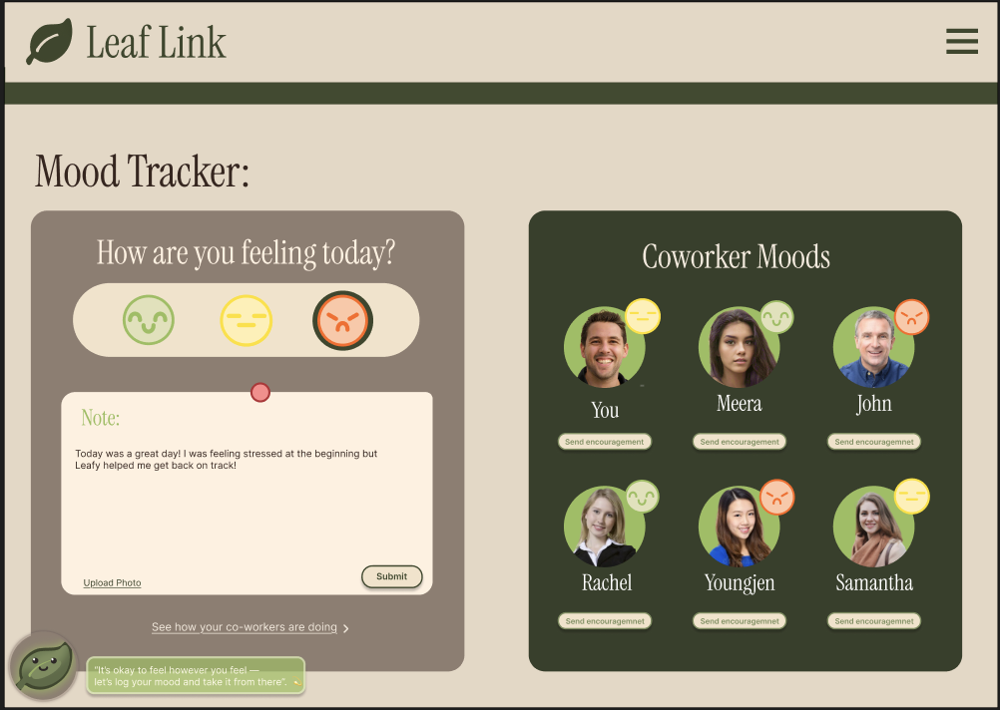
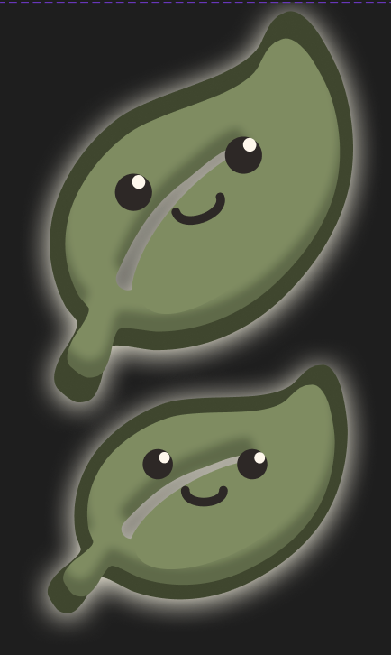
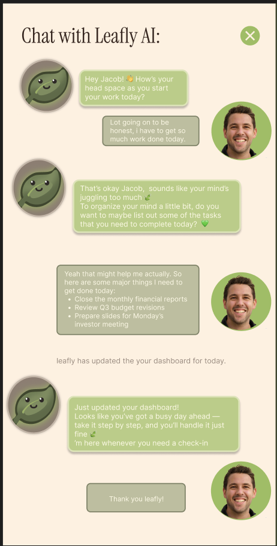

Leaf Link
A mindful workspace app for mood-based collaboration, designed in 48 hours for a CBRE-sponsored workplace wellness challenge, placing 3rd overall.
The problem
The challenge, sponsored by CBRE, asked teams to design a digital product reimagining workplace wellbeing for an office or commercial space, specifically tackling employee burnout, disengagement, and the lack of social connection that comes with hybrid and remote work.
Final output
The landing page sets the tone — soft sage and cream, a friendly mascot, and copy that frames the product as a mindful space rather than another productivity tracker.

From there, logging in leads to a personal profile — mood stats for the month, teams joined, and a notifications panel, with Leafy on hand to chat.


A personal dashboard tracks daily tasks and productivity alongside a quick insight from Leafy, before zooming out to the team view.


The mood tracker lets users log how they're feeling and see how the rest of the team is doing, side by side.

The team built around a single mascot, a leaf character, designed to soften the tones linking the concept to nature and haivng a mood-tracking system and make daily check-ins feel approachable rather than clinical. A small interaction detail: the leaf shifts pose on cursor hover, giving it a bit of life wherever it appears in the UI.

Day-to-day check-ins happen through Leafy, an in-app AI chat that prompts users to reflect and helps break down a busy day into manageable tasks.

Outcome
Leaf Link placed 3rd overall. Judges responded well to the mood-tracking dashboard and the AI check-in chat, which together gave the concept a clear, demoable core loop within the 48-hour build window.